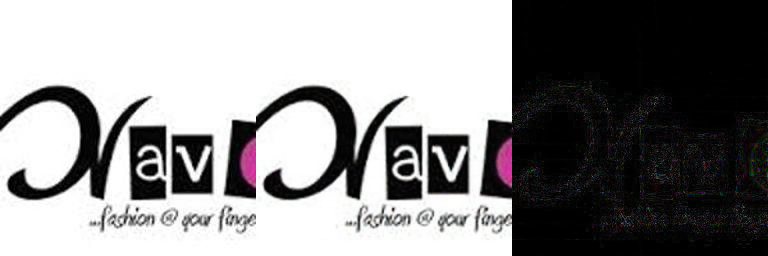
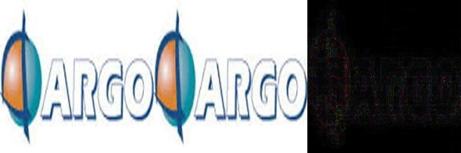
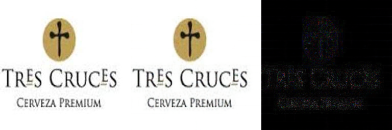
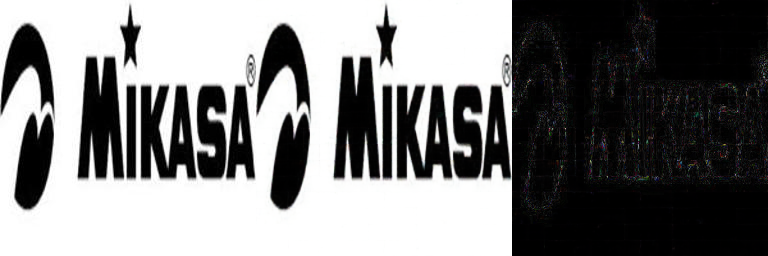
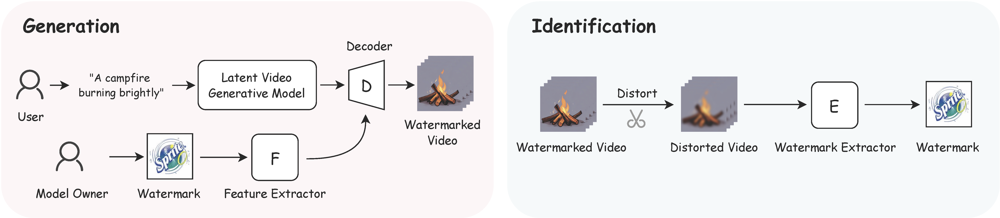
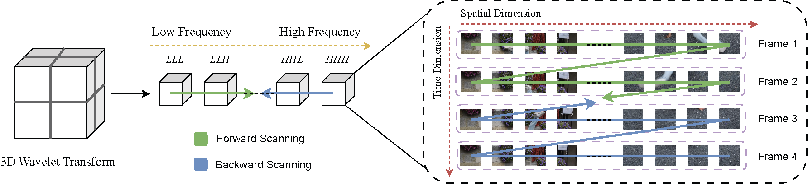
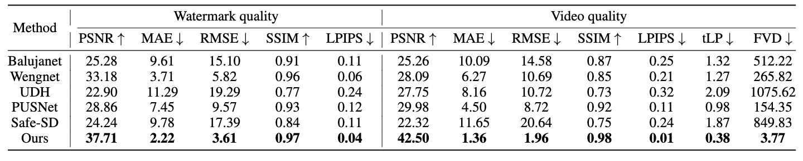
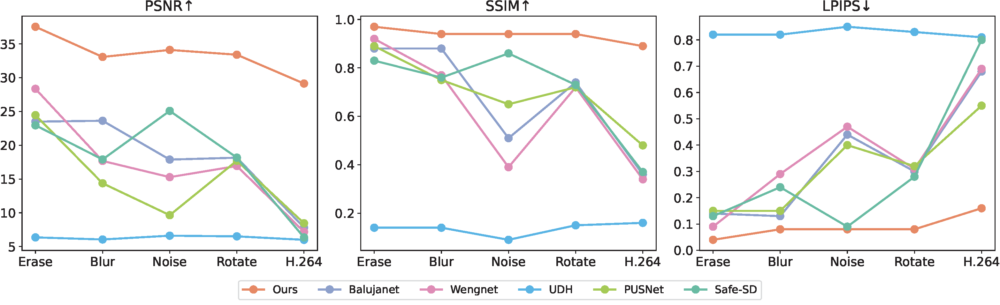

Safe-Sora is the first framework that integrates graphical watermarks directly into the video generation process.
The following results show the original video, the watermarked video, the difference between them (×5), the original watermark, the recovered watermark, and the difference between them (×5).




Abstract
The explosive growth of generative video models has amplified the demand for reliable copyright preservation of AI-generated content. Despite its popularity in image synthesis, invisible generative watermarking remains largely underexplored in video generation. To address this gap, we propose Safe-Sora, the first framework to embed graphical watermarks directly into the video generation process. Motivated by the observation that watermarking performance is closely tied to the visual similarity between the watermark and cover content, we introduce a hierarchical coarse-to-fine adaptive matching mechanism. Specifically, the watermark image is divided into patches, each assigned to the most visually similar video frame, and further localized to the optimal spatial region for seamless embedding. To enable spatiotemporal fusion of watermark patches across video frames, we develop a 3D wavelet transform-enhanced Mamba architecture with a novel spatiotemporal local scanning strategy, effectively modeling long-range dependencies during watermark embedding and retrieval. To the best of our knowledge, this is the first attempt to apply state space models to watermarking, opening new avenues for efficient and robust watermark protection. Extensive experiments demonstrate that Safe-Sora achieves state-of-the-art performance in terms of video quality, watermark fidelity, and robustness, which is largely attributed to our proposals.

Method
Overview of our Safe-Sora framework. Our method consists of three main components:
(1) Coarse-to-Fine Adaptive Patch Matching: partitioning the watermark image into patches and optimally assigning them to appropriate video frames and regions, followed by patch embedding and upsampling to generate the watermark feature map;
(2) Watermark Embedding: the watermark feature map is fused with multi-scale video features via a UNet with 2D SFMamba blocks, followed by a series of 3D SFMamba blocks that implement our spatiotemporal local scanning strategy, to produce the watermarked video;
(3) Watermark Extraction: recovering the embedded watermark using an extraction network built with a distortion layer, a series of 3D SFMamba blocks, and position recovery.
Spatiotemporal local scanning strategy. For 3D frequency scanning, we propose a spatiotemporal local scanning strategy for 3D wavelet transform, which processes the frequency components hierarchically from low frequency to high frequency and high frequency to low frequency.

Results
Qualitative comparison results.
Difference maps show absolute differences between the watermarked and original videos, and between the recovered and original watermarks.

Quantitative results on watermark quality and video quality metrics. Watermark quality is
measured by comparing the recovered watermark image with the original watermark, while video
quality is evaluated by comparing the watermarked video with the original video.

Watermark reconstruction quality under various distortions. Distortion settings include:
Random Erasing (5%–20%), Gaussian Blur (kernel size 3/5/7), Gaussian Noise (σ ∼ U(0, 0.2)),
Rotation (-30°, 30°), and H.264 Compression (CRF = 24).
BibTex
@misc{su2025safesorasafetexttovideogeneration,
title={Safe-Sora: Safe Text-to-Video Generation via Graphical Watermarking},
author={Zihan Su and Xuerui Qiu and Hongbin Xu and Tangyu Jiang and Junhao Zhuang and Chun Yuan and Ming Li
and Shengfeng He and Fei Richard Yu},
year={2025},
eprint={2505.12667},
archivePrefix={arXiv},
primaryClass={cs.CV},
url={https://arxiv.org/abs/2505.12667},
}
 Paper
Paper Code
Code